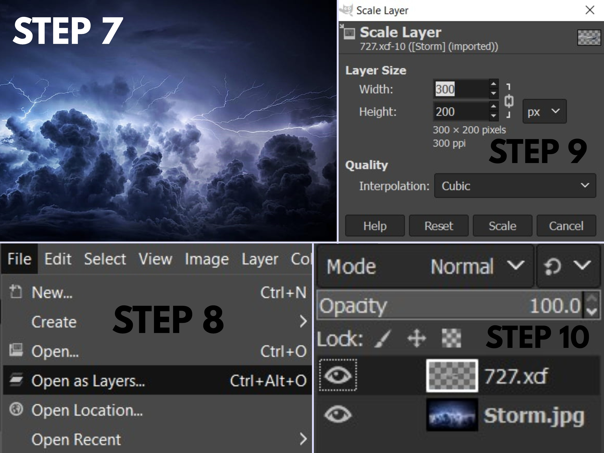

Introduction
Computer Aided Design or CAD is using computer software such as GIMP, Inkscape, and Fusion 360 to aid in a design process. These software can be used to create 2D drawings or 3D models and are often used by engineerings to visualize the construction of their products. In this webpage, I will be going through some basic tutorials using of the aforementioned softwares.
2D Design
2D designs are used for laser cutting and engraving and can be split into two categories, raster and vector. Raster images are defined by pixels and the quality of a raster image depends on the number of pixels it has. Vector images on the other hand are created by lines defined through the use of mathematics. The software GIMP is used for the former while Inkscape is used for the latter.
2D Raster
I will be demonstrating a simple use of the GIMP software on how to remove the background of an image and switch it with another using the images of a plane and a stormy sky.
{kind=link}
{kind=link}
- Choose an image and open it in GIMP.
- Go to the Layers tab, select Transperancy and click on Add Alpha Channel to allow the layer to have transperancy.
- Use the Free Select Tool and trace out the image of the plane.
- Go to the Select tab and click on Invert so that the background is now selected.
- Go to the Edit tab and click on clear to delete the background.
- Use the Smudge Tool to make the edges of the plane to make it look more natural and when done, save the image.
- Choose your new background image, open it in another tab.
- Go to File and click on Open as Layers to open the saved copy of the plane.
- Scale your the image of the plane to fit into your new background.
- Make sure that your plane layer is above the background layer.

And here is the picture of a plane flying in a stormy sky.
2D Vector
I will be demonstrating a simple use of the Inkscape software by tracing an image of a panda.
{kind=link}
- Open up inkscape and click on the import button.
- Choose your image and open it.
- Set the image import settings as follows.
- Set the opacity to around 50%.
- Go to layers and add a layer. Ideally, your panda should be split into multiple parts with each part being on a seperate.
- Use the Draw Bezier Curves (Create BSpline Path) tool to trace out the image of your panda.
- Use the Fill and Stroke function by pressing Shift+Ctrl+F and fill your traced part with either 2.5% white or black depending on which part of the panda you are tracing.
- Whilst tracing all the parts of your panda and filling them with color, you can also activate stroke paint to add an outline to your parts.
- When you are done tracing and filling the panda, you can turn off the first layer containing the imported panda images and your done!
3D CAD
3D CAD is mostly used for 3D printing or computer aided machining. Here, I will go through a practical excercise (no.3) in creating a 3D model.
First, sketch out this shape using the line command and dimension it so. Then, extrude it by 10mm.
Next, start a sketch on the front shoulder of the model, draw a diameter 50mm circle. Constrain the circle to the middle, using the midpoint constraint before extruding it by -20mm.
Lastly, use the hole function, place a diameter 40mm hole centred on the earlier drawn diameter 50mm circle.